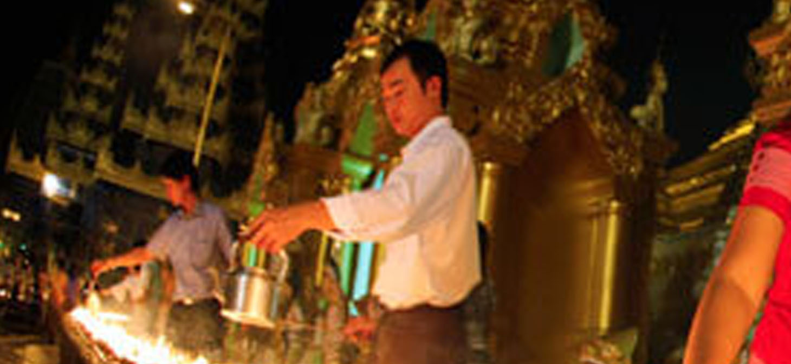
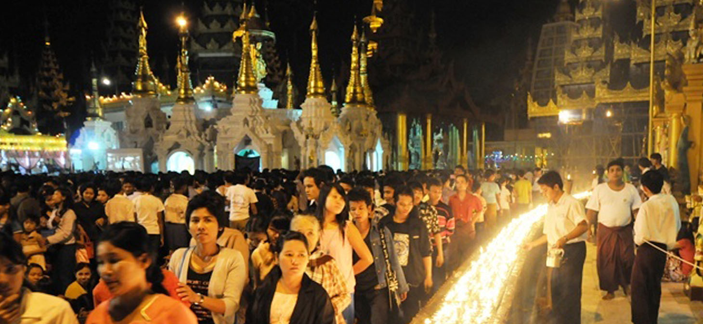
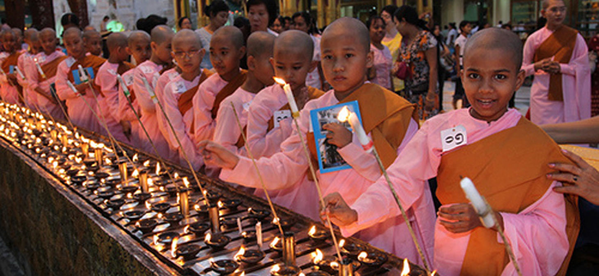
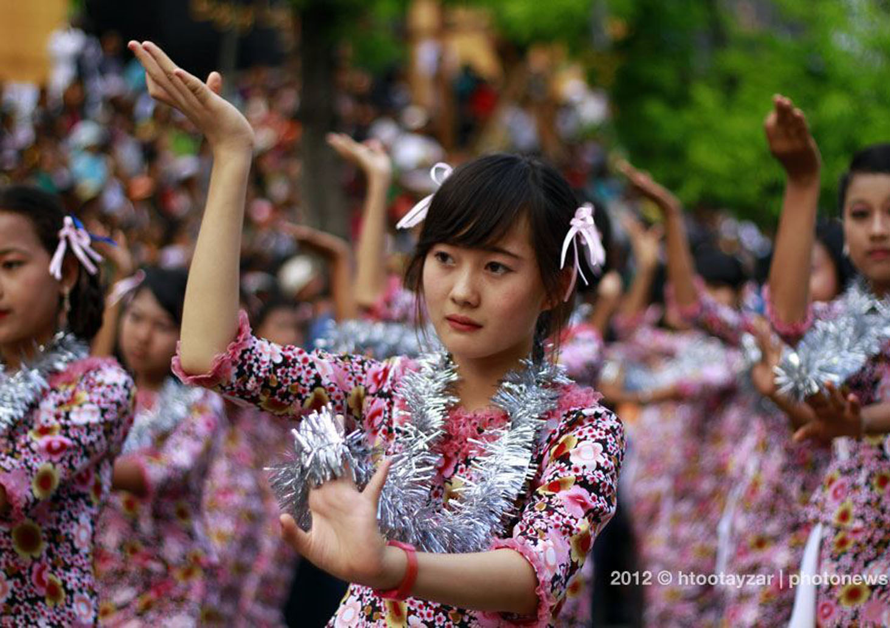
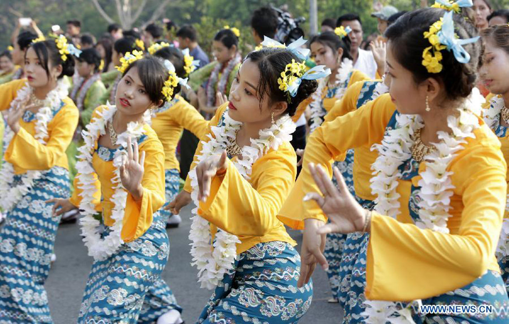
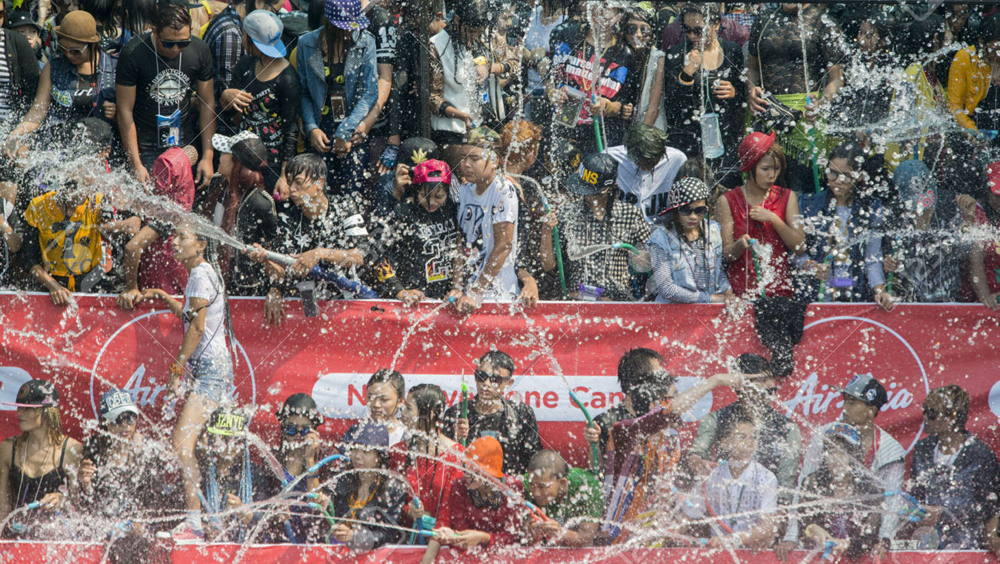
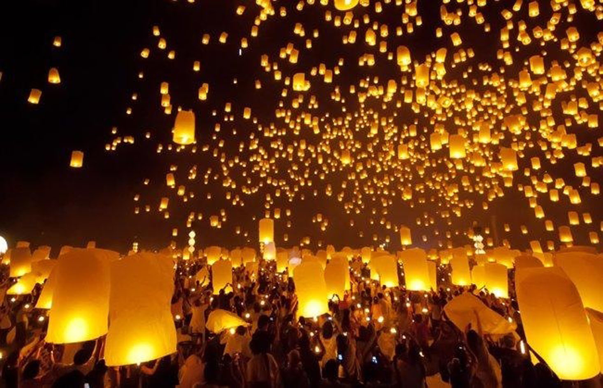
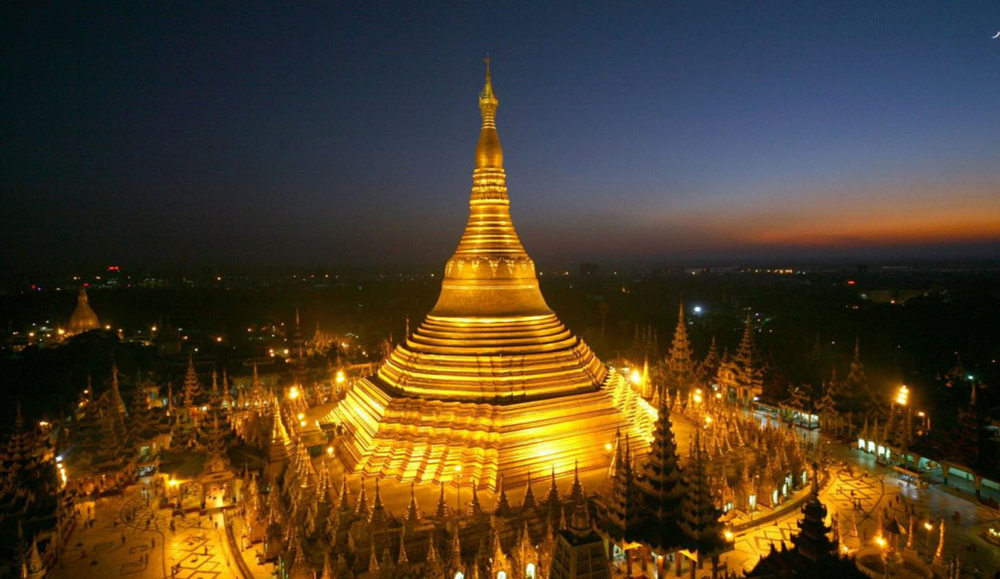

Shwedagon Pagoda Festival
Occurred between February and March, indicates it is time for rice harvest. The festival of the Shwedagon Pagoda is celebrated on the fullmoon day of Tabaung (March) every year. This is the end mark of Myanmar, which is vistible from all directions. It situates on the hill of seinguttra and therefore it lore the original name of Seinguttra Ceti.



It was built by King Utkalapa enshrinijg the sacred hair relies of the sord Buddha in this life time. brought by the two young trader brothers Tapuss a and Balirea who went to Buddha gaya to trade and came to see the sord Buddha in his early days of Enlightenment.
Thingyan Festival
Thingyan is the Burmese New Year Water Festival and usually falls around mid-April. It is a Buddhist festival celebrated over a period of four to five days culminating in the new year.
Formerly the dates of the Thingyan festival are calculated according to the traditional Myanmar lunisolar calendar but now have fixed Roman calendar (13 to 16 April) equivalent - it often coincides with Easter.

The dates of the festival are observed as the most important public holiday throughout Myanmar and are part of the summer holidays at the end of the school year. Water-throwing or dousing one another from any shape or form of vessel or device that delivers water is the distinguishing feature of this festival and may be done on the first four days of the festival. However, in most parts of Burma, it does not begin in earnest until the second day.


Thingyan Festival is comparable to other new year festivities in Theravada Buddhist areas of Southeast Asia such as Lao New Year, Cambodian New Year and Songkrann Thailand.
Thadingyut festival
Every year in Myanmar the Thadingyut Festival is celebrated by locals with enthusiasm. Thadingyut is a Buddhist celebration of the end of the Buddhist period of Lent and is held during the Full Moon of the Thadingyut month which is typically in October. Buddhists in Myanmar visit the pagodas bringing food and gifts for the monks in honor of Buddha’s descent from Heaven. This is also a time when the younger generation pays homage to their elders.

The opportunity to experience this festival is truly unique and memorable. Throughout the country, people gather for three days of celebrations to mark this religious holiday. There are light shows, music, stage-shows on the streets and plenty of delicious food to be eaten. The holiday is celebrated in different ways throughout the country. In Yangon, the famous Shwedagon Pagoda is illuminated by thousands of twinkling lights and candles and it is truly an awe-inspiring sight to behold.

This is the place to go and experience the festival if you are in Yangon. You can walk amongst the hundreds of stalls selling food, clothing and other traditional Burmese goods while interacting with friendly locals who will be thrilled with your participation!